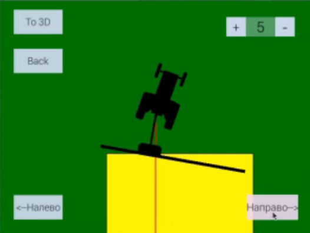

НОЦ «Инженерия будущего» - это научно-образовательный центр, призванный объединить науку и реальный сектор экономики
Комбинированная навигация сельскохозяйственной техники
Генералова А.А. 1
tm@pnzgu.ru
Киреев С.Ю. 1
dit@pnzgu.ru
Бычков Д.С.1 Никулин А.А.1 Генералов К.А.1
1 ФГБОУ ВО «ПГУ»
2 ООО НПФ «КРУГ»
Возможности
комплектация, как уже разработанных и эксплуатируемых видов техники, так и вновь проектируемых
повышение потребительских свойств коммерческого и некоммерческого грузового транспорта
Характеристики
- Напряжение питания 10-30 В
- Рабочая температура -10°~ +50°
- Вес конструкции до 7 кг
- Максимальное усилие на валу электродвигателя подруливающего устройства не менее 20 Нм
- Точность проведения сельскохозяйственных операций ~0.10 м
- Размеры устройства до 250х250х250 мм
- Масса до 3 кг
- Входной ток до 7 А
- Входное напряжение до 30 В
- Тип дисплея сенсорный TFT дисплей
- Разрешение дисплея до 12’’

Рис. 1 - Визуализация работы для интерфейса пользователя
Рис. 2 - Определение границы обработанного участка
Применение
Системы управления наземными беспилотными объектами
Комплект
- Спутниковая навигация
- Инерциальная навигация автотракторной техники
- Подруливающее устройство
- Графический интерфейс пользователя